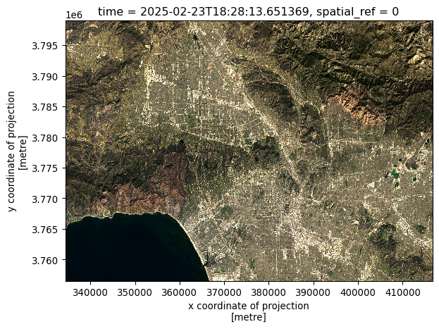
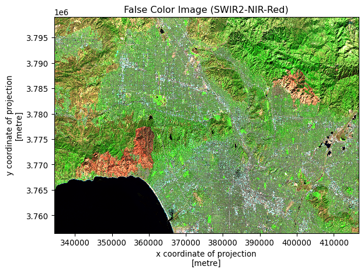
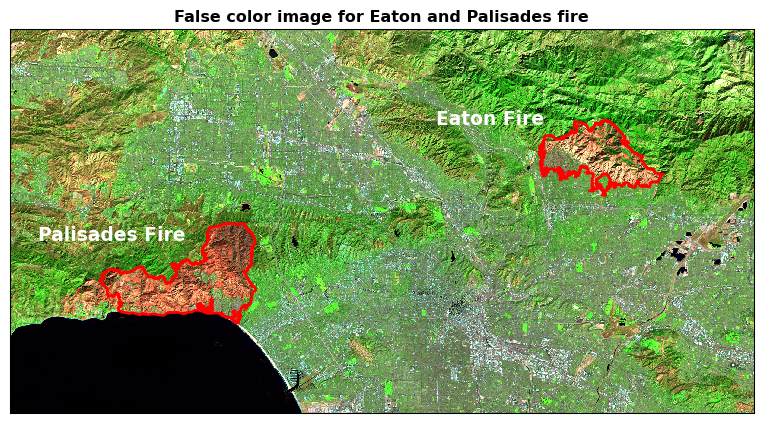

import os
import numpy as np
import pandas as pd
import xarray as xr
import rioxarray as rxr
import geopandas as gpd
import matplotlib.pyplot as plt
#from matplotlib_scalebar.scalebar import ScaleBarVisualizing fire scars through false color
MEDS
geospatial
python
eji
Author: Aakriti Poudel
GitHub Repository: https://github.com/aakriti-poudel-chhetri/eds220-hwk4
1. About this notebook
Purpose
The purpose of the task in this notebook is to produce a false-color image of the Eaton and Palisades Fires using remote sensing data, highlighting the burn scar and demonstrating how coding and data visualization support environmental monitoring.
Highlights
The key highlights of this assignment is to:
- Explore NetCDF data, xarray and restore geospatial information
- Map a True color image
- Map a False color image
- Map the Eaton and Palisades fire boundaries using false-color satellite imagery.
About the data
In this task, we will work with two datasets:
First Dataset: Simplified collection of bands from the Landsat Collection 2 Level-2
The first dataset is a simplified collection of bands (red, green, blue, near-infrared and shortwave infrared) from the Landsat Collection 2 Level-2 atmosperically corrected surface reflectance data, collected by the Landsat 8 satellite.
The data was retrieved from the Microsoft Planetary Computer data catalogue and clipped to an area surrounding the fire perimeters.
- Data Source: Microsoft Planetary Computer data catalogue
- Data Access: November 15, 2025
Second Dataset: Fire perimeters for the Eaton and Palisades fires
The second dataset is dissolved fire perimeters/boundaries for Eaton and Palisades fires. The data can be accessed from the link.
- Data Source: County of Los Angeles Open Data
- Data Access: November 15, 2025
References
Landsat Collection 2 Level-2. Microsoft Planetary Computer. Retrieved 15 Nov, 2025. https://planetarycomputer.microsoft.com/dataset/landsat-c2-l2.
Palisades and Eaton Dissolved Fire Perimeters. (2025) County of Los Angeles Open Data. https://data.lacounty.gov/maps/ad51845ea5fb4eb483bc2a7c38b2370c/about.
Why Is That Forest Red and That Cloud Blue?. (2014, March 4). NASA Earth Observatory. https://earthobservatory.nasa.gov/features/FalseColor.
What Are the Band Designations for the Landsat Satellites?.(2025, July 11). U.S. Geological Survey. https://www.usgs.gov/faqs/what-are-band-designations-landsat-satellites.
Common Landsat Band Combinations. (2021, November 12). U.S. Geological Survey. https://www.usgs.gov/media/images/common-landsat-band-combinations
2. Fire perimeter data exploration
Explore the fire perimeter data and write a brief summary of the information you obtained from the preliminary exploration.
Import data
- Import the Fire perimeters for the Eaton and Palisades fires data as a variable named
eatonandpalisadesrespectively.
Construct file paths using the os package to access the data.
Read the Eaton fire dataset.
# Define the file path
#fp_1 = os.path.join('data', 'Eaton_Perimeter_20250121')
# Use geopandas.read_file() to read the file
eaton = gpd.read_file("data/Eaton_Perimeter_20250121/Eaton_Perimeter_20250121.shp")
eaton.head()| OBJECTID | type | Shape__Are | Shape__Len | geometry | |
|---|---|---|---|---|---|
| 0 | 1 | Heat Perimeter | 2206.265625 | 270.199719 | POLYGON ((-13146936.686 4051222.067, -13146932... |
| 1 | 2 | Heat Perimeter | 20710.207031 | 839.204218 | POLYGON ((-13150835.463 4052713.929, -13150831... |
| 2 | 3 | Heat Perimeter | 3639.238281 | 250.304502 | POLYGON ((-13153094.697 4053057.596, -13153113... |
| 3 | 4 | Heat Perimeter | 1464.550781 | 148.106792 | POLYGON ((-13145097.740 4053118.235, -13145100... |
| 4 | 5 | Heat Perimeter | 4132.753906 | 247.960744 | POLYGON ((-13153131.126 4053196.882, -13153131... |
Read the Palisades fire dataset.
# Define the file path
#fp_2 = os.path.join('data', 'Palisades_Perimeter_20250121')
# Use geopandas.read_file() to read the file
palisades = gpd.read_file("data/Palisades_Perimeter_20250121/Palisades_Perimeter_20250121.shp")
palisades.head()| OBJECTID | type | Shape__Are | Shape__Len | geometry | |
|---|---|---|---|---|---|
| 0 | 1 | Heat Perimeter | 1182.082031 | 267.101144 | POLYGON ((-13193543.302 4032913.077, -13193543... |
| 1 | 2 | Heat Perimeter | 2222.488281 | 185.498783 | POLYGON ((-13193524.155 4033067.953, -13193524... |
| 2 | 3 | Heat Perimeter | 21.011719 | 22.412814 | POLYGON ((-13193598.085 4033158.222, -13193598... |
| 3 | 4 | Heat Perimeter | 214.992188 | 76.639180 | POLYGON ((-13193654.249 4033146.033, -13193656... |
| 4 | 5 | Heat Perimeter | 44203.453125 | 1569.259764 | POLYGON ((-13194209.580 4033236.320, -13194209... |
3. NetCDF data import and exploration
Import the Landsat data using xr.open_dataset().
Explore the data and write a brief summary of the information you obtained from the preliminary information. Your summary should include the a description of the data’s variables, dimensions, and coordinates.
# Define the file path
#fp = os.path.join('data', 'landsat8-2025-02-23-palisades-eaton.nc')
landsat = xr.open_dataset("data/landsat8-2025-02-23-palisades-eaton.nc")
# Import the Landsat data using xr.open_dataset()
#try:
# landsat = xr.open_dataset("data/landsat8-2025-02-23-palisades-eaton.nc")
# print("✅ Data imported successfully!")
# print(landsat)
#except FileNotFoundError:
# print(f"❌ Error: File not found. Check the file path.")
#except Exception as e:
# print(f"❌ An error occurred during import: {e}")A brief summary of the NetCDF dataset
This dataset is a remote sensing raster dataset loaded as xarray.Dataset. The total size of the dataset is 78MB. The dataset exploration gave an information on dimensions, coordinates nad data variables.
There are two spatial dimensions on dataset. The (y: 1418) represents the vertical spatial dimension (rows) and (x: 2742) represents the horizontal spatial dimension (columns).
The dataset has coordinate arrays for both x and y, stored as float64 values that corresponds to their respective spatial map coordinates. There is a only one time coordinate stored as datetime64[ns], that indicates when the image was taken.
There are five different spectral bands: red, green, blue, nir08 and swir22, and they have the same pixel grid (float32). A spatial_ref variable is also included to store the map projection information.
4. Restoring geospatial information
Check the coordinate reference system of the landsat data and transform as necessary.
- Use
rio.crsto print what is the CRS of this dataset. Is this a geospatial object?
# Check CRS of the dataset
print(landsat.rio.crs)None- Print the CRS by using accesing the
spatial_ref.crs_wktattribute of the dataset.
# Print CRS of the dataset
print(landsat.spatial_ref.crs_wkt)PROJCS["WGS 84 / UTM zone 11N",GEOGCS["WGS 84",DATUM["WGS_1984",SPHEROID["WGS 84",6378137,298.257223563,AUTHORITY["EPSG","7030"]],AUTHORITY["EPSG","6326"]],PRIMEM["Greenwich",0,AUTHORITY["EPSG","8901"]],UNIT["degree",0.0174532925199433,AUTHORITY["EPSG","9122"]],AUTHORITY["EPSG","4326"]],PROJECTION["Transverse_Mercator"],PARAMETER["latitude_of_origin",0],PARAMETER["central_meridian",-117],PARAMETER["scale_factor",0.9996],PARAMETER["false_easting",500000],PARAMETER["false_northing",0],UNIT["metre",1,AUTHORITY["EPSG","9001"]],AXIS["Easting",EAST],AXIS["Northing",NORTH],AUTHORITY["EPSG","32611"]]- Recover the geospatial information by using
rio.write_crs()and the spatial reference information from part b.
# Recover the geospatial information
print(landsat.rio.write_crs(landsat.spatial_ref.crs_wkt, inplace=True))<xarray.Dataset> Size: 78MB
Dimensions: (y: 1418, x: 2742)
Coordinates:
* y (y) float64 11kB 3.799e+06 3.799e+06 ... 3.757e+06 3.757e+06
* x (x) float64 22kB 3.344e+05 3.344e+05 ... 4.166e+05 4.166e+05
time datetime64[ns] 8B ...
spatial_ref int64 8B 0
Data variables:
red (y, x) float32 16MB ...
green (y, x) float32 16MB ...
blue (y, x) float32 16MB ...
nir08 (y, x) float32 16MB ...
swir22 (y, x) float32 16MB ...- Print the CRS of the updated dataset.
# Print the CRS of the updated dataset
print(landsat.rio.crs)EPSG:326115. True color image
To create a True color image, follow the following steps:
- Without creating any new variables:
- select the red, green, and blue variables (in that order) of the
xarray.Datasetholding the Landsat data, - convert it to a
numpy.arrayusing theto_array()method, and then - use
.plot.imshow()to create an RGB image with the data. There will be two warnings, that’s ok.
- Adjust the scale used for plotting the bands to get a true color image. HINT: Check the robust parameter. *The issue here is the clouds: their RGB values are outliers and cause the other values to be squished when plotting.
# Select the red, green and blue variables, convert it to a numpy.array and create an RGB image
landsat[['red', 'green', 'blue']].to_array().plot.imshow(robust = True)/opt/anaconda3/envs/eds220-env/lib/python3.11/site-packages/matplotlib/cm.py:478: RuntimeWarning: invalid value encountered in cast
xx = (xx * 255).astype(np.uint8)- To resolve the other warning, identify which bands have
nanvalues. HINT: There are many ways of doing so. One option is to usenumpy.isnan().
# Identify 'nan' values in bands
for i in ['red', 'green', 'blue']:
# .isnull() creates a boolean array (True where NaN)
# .sum() sums the True values (counts the NaNs)
# .item() converts the single result to a standard Python integer
nan_count = landsat[i].isnull().sum().item()
print(f"The {i} band has {nan_count} Nan values.")The red band has 0 Nan values.
The green band has 1 Nan values.
The blue band has 109 Nan values.- Use the
.fillna()mehtod forxarray.Datasetsto substitute the anynanvalues in the Landsat data for zero.
# Substitute any 'nan' values in the Landsat data for zero
landsat = landsat.fillna(0)- Create a new true color image that gets plotted without warnings.
# Create a new true color image without warnings
landsat[['red', 'green', 'blue']].to_array().plot.imshow(robust = True)
A brief explanation comparing the ouputs for parts (a) and (e).
The first true color image (part a) was plotted directly from the red, green and blue bands without modifying the dataset. The image worked, but we got warnings because some of the data had Nan (missing) values. These missing values caused problems during plotting. Additionally, due to the presence of very bright cloud pixels, many of the other colors appeared darker or washed out, even when using the robust=True to ignore extreme outliers.
In part (part e), we replaced all Nan values with zeros before plotting again. This removed the missing values issue allowing the plot to scale the data more smoothly. So, the second true color image displayed without warnings. The second true color image looks cleaner and has better contrast. It doesn’t have the plotting problems seen in the first image.
6. False color image
Without creating any new variables, create a false color image by plotting the short-wave infrared (swir22), near-infrared, and red variables (in that order).
# Create false color image (SWIR2, NIR, Red)
landsat[['swir22', 'nir08', 'red']].to_array().plot.imshow(robust = True)
plt.title('False Color Image (SWIR2-NIR-Red)')
plt.show()
7. Map
- Create a map showing the shortwave infrared/near-infrared/red false color image together with both fire perimeters. Customize it appropriately including, at least, an informative title and legend. You may also want to include text on the map to identify which fire is which.
# Combine the two fire perimeter datasets into a single GeoDataFrame
fires = pd.concat([eaton, palisades], ignore_index = True)
# Convert CRS of the Eaton and Palisades fire perimeter to landsat dataset CRS
fires = fires.to_crs('epsg:32611')# Initialize the map
fig, ax = plt.subplots(figsize = (10, 8))
# Plot the false color map
landsat[['swir22', 'nir08', 'red']].to_array().plot.imshow(robust = True,
ax = ax,
add_colorbar = False)
# Plot fires perimeter on false color map
fires.boundary.plot(ax = ax, color = 'red', linewidth = 2)
# Add text for first fire (adjust index and name as needed)
ax.text(fires.geometry.centroid.x.values[0] - 11000, fires.geometry.centroid.y.values[0] + 8000, 'Eaton Fire',
fontsize = 14, weight = 'bold', color = 'white', ha = 'center', va = 'center')
# Add text for second fire (adjust index and name as needed)
ax.text(fires.geometry.centroid.x.values[-1] - 9000, fires.geometry.centroid.y.values[-1] + 5000, 'Palisades Fire',
fontsize = 14, weight = 'bold', color = 'white', ha = 'center', va= 'center')
# Add title to the map
plt.title('False color image for Eaton and Palisades fire', fontsize = 12, weight = 'bold')
# Remove axes ticks
ax.set_xticks([])
ax.set_yticks([])
# Remove axes labels
ax.set_xlabel("")
ax.set_ylabel("")
# Add a scalebar
#ax.add_artist(ScaleBar(1, box_color="white",location="lower left"))
plt.show()
Description for the map including a brief explanation of how false color imagery is being used
This map shows a false color image made from Landsat data for Eaton and Palisades fire of the Los Angeles County. The map uses three bands: SWIR2, NIR and Red, assigned to the red, green and blue color channels. In this image, vegetation looks green because they reflect a lot of near-infrared light. The fire burned areas and bare ground looks brown. The urban areas usually appear purple or gray. The water looks black. The boundaries of the Eaton Fire and Palisades fire are delineated with red outlines. Each fire is labeled.
This combination of bands is useful for spotting burn scars and understanding fire damage because SWIR2 reacts strongly to moisture changes, and NIR highlights how healthy the vegetation is. Together, these bands make it easy to see where fires have changed the landscape.
Citation
BibTeX citation:
@online{poudel2025,
author = {Poudel, Aakriti},
title = {Visualizing Fire Scars Through False Color},
date = {2025-11-29},
url = {https://aakriti-poudel-chhetri.github.io/posts/2025-12-eaton-palisades-fires-eji/},
langid = {en}
}
For attribution, please cite this work as:
Poudel, Aakriti. 2025. “Visualizing Fire Scars Through False
Color.” November 29, 2025. https://aakriti-poudel-chhetri.github.io/posts/2025-12-eaton-palisades-fires-eji/.